教程：示范模型——FLAC3D 的使用机制
第一个教程帮助新用户初步了解使用 FLAC3D 建模的基本知识。下文列出的教程结构，对应 FLAC3D 建模的一般结构；该结构在使用 FLAC3D 解决问题（Problem Solving with FLAC3D）各节中详细介绍，并在一般求解流程图解（General Solution Procedure, Illustrated）中绘出。
本教程问题是在低黏聚力土体中开挖沟槽。开挖期间观察到破坏后，添加支护使沟槽稳定。

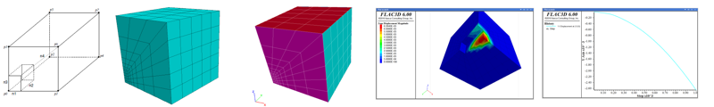
对于本教程，一般求解流程图解（General Solution Procedure, Illustrated）中的顺序可分解如下。
首先，必须在 FLAC3D 中建立模型，包括以下前七步。
为模型创建项目。
项目（project）集中收集构成 FLAC3D 模型的所有资源和输出。
创建网格，将模型体积离散化。
网格定义问题的几何形状。
使用分组为模型区域命名。
分组用于标识模型中特别关注的区域。
赋予本构行为和材料性质。
本构行为及相关材料性质决定模型受到扰动时的响应类型，例如开挖引起的变形响应。
施加边界条件。
赋予初始条件。
初始条件定义原位状态，即问题状态发生变化或扰动之前的条件。
步进至初始平衡状态。
模型设置完成后，计算其初始平衡状态。
接下来，模型已准备好接受修改、扰动或其他检查。这通常是预期分析真正开始的时点。以下步骤可能根据分析需要，以多种方式循环或分支。
根据问题要求修改模型。
随后实施修改（开挖材料、改变边界条件、安装支护等），并计算模型产生的响应。此时，问题性质将决定后续步骤，没有固定的标准方法。本教程继续执行并最终完成以下步骤。
检查模型响应（绘图）。
进一步修改（例如安装支护）。
项目完成（存储）。
求解
对于 FLAC3D 这样的显式程序，问题的实际求解方式与常规隐式求解程序不同。（这是较大的主题，见FLAC3D 理论与背景（FLAC3D Theory and Background）一节。）FLAC3D 使用显式时间推进法求解离散方程，经过一系列计算步后得到解。在 FLAC3D 中，达到解所需的步数可由程序自动控制，也可由用户手动控制。但用户最终必须判断步数是否足以收敛至平衡。本教程在下文步进至平衡（Step to Equilibrium）和进一步讨论：步进至平衡（Further Discussion: Step to Equilibrium）两节中介绍判断方式。
构建数据文件
FLAC3D 是命令驱动程序。命令可从命令提示符发出，许多情况下也可通过用户界面交互生成。从不同位置发出的命令没有区别，仅发出命令的效率、速度及用户偏好不同。
但还有第三个保存和记录命令的位置：数据文件。数据文件本质上是批处理文件，即可连续发出并处理的命令列表。这比命令提示符或鼠标／键盘操作更高效，因为后两者一次只能发出一条命令；它还具有额外优点，可以从头到尾以易读方式表示一个问题。
因此，在 FLAC3D 中构建模型，就是构建数据文件。虽然可以在处理任何命令之前输入完整数据文件，但实际很少这样做。通常，最终数据文件是逐步形成的，混合使用文件自身和／或其他数据文件、命令提示符以及用户界面的命令；此外，为更好地表示问题，完善建模方法时还会产生许多“草稿”。FLAC3D 数据文件构建的技巧，在于高效利用这三类命令来源以及保存／恢复系统，逐步解决问题。
状态记录窗格
在 FLAC3D 中，所有修改当前模型状态的操作都通过发出命令实现。仅影响程序或项目状态的操作没有此要求，通常不会在界面中发出命令，尽管也存在仅改变这些状态的命令。给定模型状态中发生的所有命令均记录在状态记录（State Record）中。该记录包含在通过 保存模型（model save） 创建、表示模型状态的保存文件内。无论命令是用户直接输入，还是界面交互生成，都会记录。可在状态记录窗格（State Record Pane）中查看这些命令。状态记录可以通过 回放记录文件（program playback） 命令直接回放，或转换为等效数据文件，以便以后重复或参数化。
状态记录不记录已执行数据文件的内容，因为认为这些命令已记录在数据文件本身。它只跟踪数据文件名、大小和最后修改时间戳，供参考。
创建新项目
为本教程创建项目。
- 从主菜单选择。
- 导航到用于保存项目文件的文件夹。
- 在文件名字段中，将项目命名为“tutorial1”。
- 按或按
Enter。

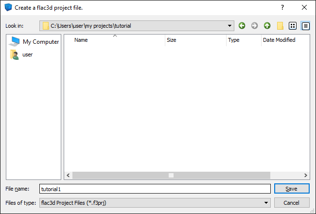
设置工作区
设置并保存工作区。
- 选择。
- 选择。
- 选择。
步骤 3 保存项目时，工作区状态（包括当前布局设置）随项目保存。本教程将使用状态记录和模型窗格的工具，因此需要同时打开它们。
创建数据文件
本教程将为问题创建一个完整的单一数据文件。[1]
- 选择或按
Ctrl + N。 - 在“文件名”字段输入“tutorial”。
- 按或按
Enter。
请注意，新数据文件成为活动窗格。
讨论
创建并保存项目文件（project file）后，FLAC3D 使用项目文件所在文件夹作为当前工作目录。用户界面打开的多数文件管理对话框默认使用此位置（但某些可能记住该会话中上次访问文件的位置）。此外，任何保存文件的命令均可不提供路径，因为未提供路径时默认使用工作目录。[2]
强烈建议在任何建模过程开始时先创建项目，作为使用 FLAC3D 的方式。除上述功能外，项目还处理多种任务（handles a range of tasks）来管理建模工作。项目的存在使保留设置、重新打开或恢复文件、项目支持和归档显著更容易。
有关项目使用的完整信息，见项目（Projects）一节。
界面中的表现
创建项目和数据文件后，可注意程序行为的其他几个方面。
- FLAC3D 程序标题栏显示项目名，同时显示程序完整版本号。
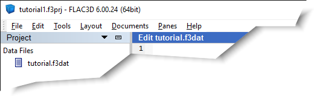
- 数据文件已添加至项目窗格（请确保使用“宽”布局；如果 FLAC3D 与图示不同，选择）。
- 另请注意，创建数据文件时，空白数据文件会在编辑窗格打开，该窗格以选项卡方式叠放在 Plot01 窗格上方，并自动成为活动窗格（活动窗格标题栏的蓝色比非活动窗格更深）。通常，创建新文件（或绘图、其他程序资源）会使包含该资源的窗格成为活动窗格。
- 数据文件名显示在包含该文件的编辑窗格顶部。
- 控制面板和程序工具栏（toolbar）包含用于编辑窗格的工具。为进一步说明，选择 tutorial 选项卡旁的 Plot01 选项卡，观察控制面板和工具栏如何变化。接着单击控制台窗格标题栏，再单击项目窗格标题。注意这些变化，以及每次被单击的项目如何成为活动窗格。任何时候，控制面板和程序工具栏都会根据当前活动的窗格类型（pane type），随上下文提供工具和功能。
生成网格
本问题的网格由一条命令创建。
- 将以下各行输入“tutorial.dat”数据文件（也可直接从下面清单剪切粘贴）。
; 创建几何体/网格单元
model new
zone create radial-brick ...
point 0 (0,0,0) point 1 (10,0,0) ...
point 2 (0,10,0) point 3 (0,0,10) ...
size 3,5,5,7 ...
ratio 1,1,1,1.5 ...
dim 1 4 2 fill group "exc"
model save "geom"
- 按执行按钮（
 ）。命令被处理，并在控制台窗格输出中回显。
）。命令被处理，并在控制台窗格输出中回显。 - 激活模型窗格（单击“模型”选项卡）。
- 在模型上按住鼠标右键并拖动，进行三维旋转。如果希望进一步检查模型，更多视图操作方式见视图操作（View Manipulation）。
上一步：创建新项目（Create a New Project） | 下一步：创建模型分组（Create Model Groups）
讨论
第一行清除 FLAC3D 的模型状态信息（参考 新建模型（model new））。为简化操作，本教程每次添加新行后，都使用 重新运行整个数据文件。在开头放置 新建模型（model new） 可确保每次重新运行都不出错。
第二行创建几何形状，使用 radial-brick 基本体（primitive）创建网格单元。基本体名称后的关键字指定网格单元数量、网格间距（比值）和砖体尺寸。该命令占六行输入文本，但通过续行运算符（…），FLAC3D 将其视为一行，因此是一条命令。
使用 zone create 命令，通过基本体创建问题网格，是快速高效的网格单元构建方法。但随着模型几何形状越来越复杂，基本体的使用也越来越困难；FLAC3D 提供其他网格构建方法，可能更适合。网格单元构建方法及网格构建中的多项考虑，见网格生成（Grid Generation）。
建议在问题几何体的网格单元创建完成后保存模型状态。由于一条 zone create 命令就足以获得本问题所需几何体，上述最后一行将模型状态保存到“geom.f3sav”文件（请注意，扩展名自动添加）。
附加信息
进一步讨论：使用基本体划分网格（Further Discussion: Meshing With Primitives）中提供进一步说明和更多示例。
关于程序对这里发出命令的响应，见界面中的表现（In the Interface）主题。
进一步讨论：使用基本体划分网格
网格生成的一种基本方法是使用 zone create 命令及其相关关键字，定义模型网格单元数量，并塑造网格以适应指定问题区域。
生成器内置若干基本体形状，以加快简单问题形状的网格生成，包括砖体、楔体、棱锥和圆柱体。下方示例清单是教程：使用 FISH（Tutorial: Working with FISH）中使用的命令，创建一个砖形网格，其中 \(x\) 方向有六个、\(y\) 方向有八个、\(z\) 方向有八个网格单元。[3]
model new
zone create brick size 6,8,8
网格单元的数量由 size 关键字指定。
选择模型网格单元数量时应谨慎，因为必须在所需准确性与求解速度之间取得平衡。
虽然 FLAC3D 模型的许多方面都会影响计算速度，但一旦基本参数确定，速度就直接随单元数量变化。经验上，对于约 5000 个单元以内的模型，给定修改后通常需约 2000 至 4000 步达到求解状态。在 2.67 GHz Intel i7 计算机上，5000 单元模型运行 4000 步大约需要 30 秒。应检查您的计算机对具体模型的计算速度，以估计所需运行时间。
构建 FLAC3D 模型时，良好做法是先采用较少网格单元进行简单试算并调整网格，然后增加网格单元数量，提高准确性。
最简单情况下，zone create 命令可以给网格提供新坐标。例如，假定沟槽模型实际坐标在 \(x\) 方向从 -10.0 至 10.0，\(y\) 方向从 -10.0 至 10.0，竖直 \(z\) 方向从 -20.0 至 0.0。下一清单说明如何指定。
model new
zone create brick size 6,8,8 ...
point 0 -10, -10, -20 ...
point 1 10, -10, -20 ...
point 2 -10, 10, -20 ...
point 3 -10, -10, 0
上例中，point 0、point 1、point 2 和 point 3 为关键字，表示标准 FLAC3D 网格的四个角点（见下图）。请注意，第一、二、三、四行末尾均有省略号（…），表示下一行是同一命令的延续，因此第一条命令 zone create 虽占五行输入文本，却被 FLAC3D 作为单行处理。
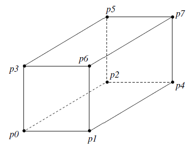
图 1：标准 FLAC3D brick 网格形状的角点坐标关键字。
定义平行六面体形网格只需四个角点。可指定更多角点以定义不规则表面。下一示例说明如何在网格顶部创建倾斜表面。
model new
zone create brick size 6,8,8 ...
point 0 -10, -10, -20 ...
point 1 10, -10, -20 point 2 -10, 10, -20 ...
point 3 -10, -10, 0 point 4 10, 10, -20 ...
point 5 -10, 10, 10 point 6 10, -10, 0 ...
point 7 10, 10, 10
关键字 point 0、point 1、point 2、point 3、point 4、point 5、point 6 和 point 7 对应的坐标可以位于空间任意点。但八个角点必须满足上图所示拓扑顺序，即 point 0、point 1、point 2、point 3 必须形成右手坐标系，以创建正体积网格单元。允许面不共面，但应尽量避免，因为可能引入微小体积误差。
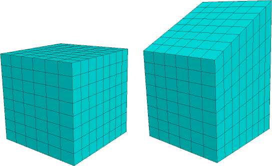
图 2：前两个示例中的简单 brick 和倾斜表面 brick。
请注意，模型边界会影响结果。前一句替换了后面的已标记语句；后者暂被标记，等待常用命令教程的处理结果:ref:basiccli 中指出模型边界影响结果（见 :flag2:待确定的图引用）。边界必须距开挖足够远，以减小这些影响。FLAC3D 可创建逐渐变化的网格，将模型边界移得更远，同时不显著增加网格单元数量。例如，创建径向砖块单元命令（zone create radial-brick） 命令创建砖形网格周围沿径向渐变的网格。下一示例的命令创建 3 × 5 × 5 个网格单元的砖形网格，周围是七层径向渐变网格。
model new
zone create rad-brick ...
point 0 (0,0,0) point 1 (10,0,0) point 2 (0,10,0) point 3 (0,0,10) ...
size 3,5,5,7 ...
ratio 1,1,1,1.5 ...
dim 1,4,2 fill
FLAC3D 中的 \(x\)、\(y\)、\(z\) 坐标系始终为右手系，默认在屏幕上将 \(z\) 轴绘为竖直方向。在上述简单 brick 示例中，假定 \(z\) 轴指向竖直方向。但不必将 \(z\) 轴解释为向上方向。本例假定 \(y\) 轴为竖直方向。只要按右手系定义模型，就可以沿任意所需方向创建网格。
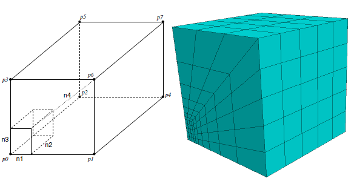
图 3：左：砖体周围径向渐变网格的单元编号（size n1 n2 n3 n4）；右：前一示例生成的网格。
size 关键字指定砖体中的网格单元数量，以及沿径向围绕砖体的网格单元数量（见右侧生成网格）。ratio 关键字用于调整网格间距，ratio 后的四个值为相邻网格单元尺寸的等比系数。前三个值对应砖体内网格单元，第四个值对应砖体周围网格单元。本例中，砖体内网格单元比值为 1.0，周围网格单元为 1.5。因此，砖体周围每一圈后续网格单元的径向尺寸增为前一圈的 1.5 倍。dimension 关键字定义砖体区域尺寸，即 1 m × 4 m × 2 m。fill 关键字用网格单元填充砖体区域。若省略 fill，砖体区域内不会生成网格单元。
可用多条 创建径向砖块单元命令（zone create radial-brick） 命令创建模型的不同区域。例如，前例创建了本教程沟槽模型四分之一的网格。下例说明如何组合四条创建四分之一对称体的 创建径向砖块单元命令（zone create radial-brick） 命令，创建问题的完整网格。
model new
zone create radial-brick ...
point 0 (0,0,0) point 1 (10,0,0) ...
point 2 (0,10,0) point 3 (0,0,10) ...
size 3 5 5 7 ...
rat 1 1 1 1.5 ...
dim 1 4 2 fill
zone create radial-brick ...
point 0 (0,0,0) point 1 (0,0,10) ...
point 2 (0,10,0) point 3 (-10,0,0) ...
size 5 5 3 7 ...
rat 1 1 1 1.5 ...
dim 2 4 1 fill
zone create radial-brick ...
point 0 (0,0,0) point 1 (-10,0,0) ...
point 2 (0,10,0) point 3 (0,0,-10) ...
size 3 5 5 7 ...
rat 1 1 1 1.5 ...
dim 1 4 2 fill
zone create radial-brick ...
point 0 (0,0,0) point 1 (0,0,-10) ...
point 2 (0,10,0) point 3 (10,0,0) ...
size 5 5 3 7 ...
rat 1 1 1 1.5 ...
dim 2 4 1 fill
请注意，size、ratio 和 dimension 都对应上文 radial-brick 图中由 point 0, point 1, point 2, point 3 定义的局部坐标轴，而非全局 \(x\)、\(y\)、\(z\) 坐标轴。其值将随 point 0、point 1、point 2 和 point 3 的指定方式改变。径向渐变沟槽模型见下图。务必确保形状之间边界上的所有网格点匹配。如果连接形状的网格点沿边界位置不同，分析就会产生错误。关于网格创建及相邻网格点距离容差的进一步讨论，见网格生成（Grid Generation）。

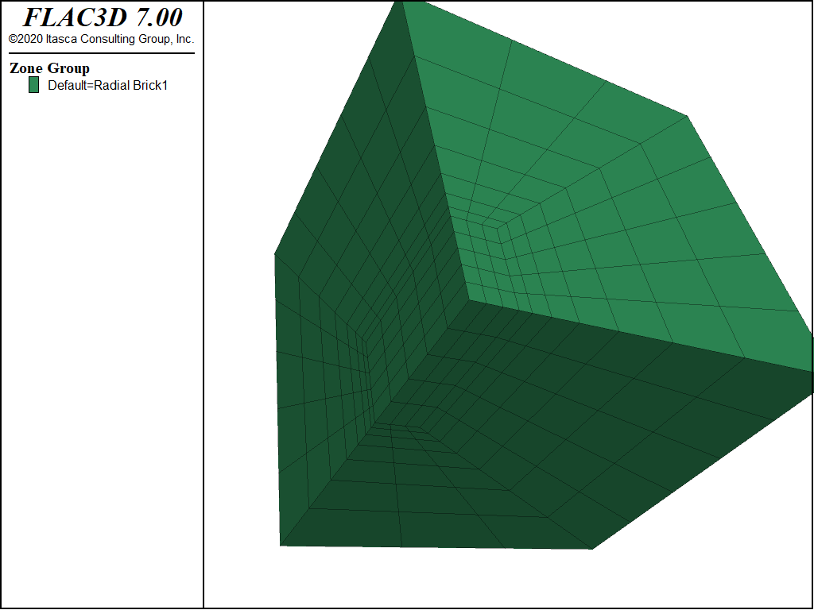
图 4：径向渐变的沟槽模型。
前例说明 FLAC3D 中相邻单元精确对应的要求。也可利用对称面，以其他方式获得相同结果。模型部分区域可关于指定平面镜像，以生成更大模型。下例说明实现方法。
model new
zone create radial-brick ...
point 0 (0,0,0) point 1 (10,0,0) ...
point 2 (0,10,0) point 3 (0,0,10) ...
size 3,5,5,7 ...
ratio 1,1,1,1.5 ...
dim 1 4 2 fill
zone reflect dip 0 dip-direction 90
zone reflect dip 90 dip-direction 90
前两个示例生成的网格相同。但查看“Plot01”时可观察到一个区别：第一例创建四个网格单元分组（见上图），第二例仅创建一个。这是因为 FLAC3D 会自动将一次 zone create 命令操作生成的所有网格单元归为一组。
关于 ratio 的使用
选择等比系数时，应考虑若干准则。
- 更细的网格能够更好地表示较高应力梯度，因此结果更准确。
- 网格单元纵横比越接近 1，准确性越高。
- 如果需要不同网格单元尺寸，从最小到最大尺寸更平缓的变化会改善结果；应避免网格单元尺寸突变。
但随着网格细化和网格单元数量增加，需要更多 RAM，计算时间也会延长。通过调整网格单元尺寸改善网格几何，肯定能提高 RAM 使用效率并减少计算时间，但规划和设置也需一定时间。对于更复杂几何体，从“蛮力”方法（即大型均匀网格中的单一尺寸单元）改为更精巧的方案，可以改善 RAM 使用和计算速度。网格生成（Grid Generation）概述了 FLAC3D 可用的网格生成方法。
界面中的表现
处理生成问题网格的命令后，可以观察界面的几个方面。

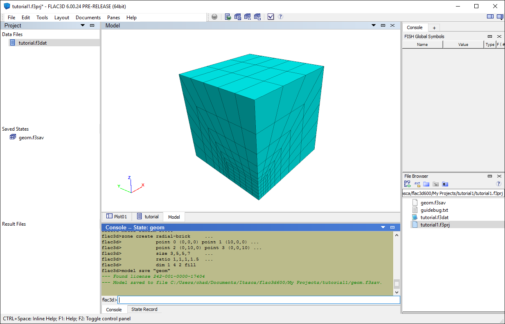
- 标题栏项目名旁出现星号（*），表示项目尚未保存。在 FLAC3D 中，列表或标题栏名称旁出现星号，表示该项自上次保存后已被修改。
- “tutorial.dat”文件旁没有星号，因为按执行按钮（）时，文件已自动保存，这是使用该按钮时程序的正常响应。
- 项目窗格现在的“保存状态”列表中包含“geom.f3sav”。
- 模型窗格显示已创建的模型网格单元。
- 单击项目窗格标题栏，再单击模型窗格标题栏或选项卡，然后单击控制台窗格。被单击窗格的标题栏变为深蓝色，表示它成为活动窗格。观察更改活动窗格对工具栏和控制面板的影响。注意当前活动窗格很重要，因为工具栏和控制面板提供的功能专用于该窗格类型（pane type）。
- 按执行按钮（）后，从数据文件处理的命令在控制台输出中回显。仔细观察会发现，按按钮的实际作用，是对当前活动数据文件发出 调用数据文件（
program call） 命令。
创建模型分组
接下来获得后续设置边界和初始条件所需的网格单元面分组。此外，为每个阶段将从模型移除的网格单元分组，从而定义五个开挖阶段。
- 如果模型窗格尚未激活，请单击“模型”选项卡将其激活。
- 按自动指定面分组按钮（
 ）。
）。 - 在随后对话框中，勾选忽略现有分组名，并按。
在中下方选项卡组中，单击状态记录窗格内任意位置（如果它位于选项卡组顶部），或单击其选项卡（如果它当前在其他窗格下方），将其激活。
选择以下一行
>>zone face skin slot-skin "Skin"
右键单击，选择复制为数据文件。
激活教程数据文件，将光标置于文件末尾，并粘贴（Ctrl + V 或）。
为五个开挖阶段分别创建分组。在数据文件中输入创建五个分组（“exc1”至“exc5”）的各行，也可从下方复制粘贴。
在数据文件末尾，输入（或从下文复制粘贴）model save "groups"。
本步骤和步骤（6）中添加到“tutorial.dat”的命令应如下所示：
zone group "exc1" range position (0, 0,0) (1,0.8,2) zone group "exc2" range position (0,0.8,0) (1,1.6,2) zone group "exc3" range position (0,1.6,0) (1,2.4,2) zone group "exc4" range position (0,2.4,0) (1,3.2,2) zone group "exc5" range position (0,3.2,0) (1,4.0,2)
请注意，也可使用模型窗格中的范围选择工具，以交互方式生成这些命令。为简洁起见，此处未这样做。
按求解按钮（
），将模型重新运行到此处。
上一步：生成网格（Generate the Grid） | 下一步：指定模型、边界和初始条件（Specifying Models, Boundaries, and Initial Conditions）
讨论
模型窗格的自动指定面分组工具，根据转折角（默认为 45°）识别相邻网格单元面组成的分组，并为其创建自动命名的面分组。[4]本例使用该工具会创建六个面分组，分别对应问题立方体几何形状的六个“侧面”。
请注意，这里发生了一件特定的事：模型状态改变，包含了新创建的面分组。但引起该变化的命令不是“tutorial”数据文件的一部分。为确保数据文件完整，需要获取创建分组的命令。通过状态记录窗格完成此操作。顾名思义，状态记录窗格会在任何改变模型状态的命令发出时，将其记录并存储；这些命令可能来自数据文件、命令提示符或用户界面。因此，该记录包含创建当前模型状态所需的全部命令。本教程目标是形成一个完整的单一数据文件，所以使用状态记录窗格，复制通过自动指定面分组工具创建面分组的命令，并粘贴到数据文件中。
五个开挖阶段各自的网格单元也通过 zone group 命令分组。这里清楚体现了将对象归入命名分组的一项主要优点：分组名称可以彼此关联，并与模型其余部分形成逻辑关系。后文出现执行开挖顺序的命令时，分组名将有助于说明命令的作用。
模型的逻辑部分识别并分组后，建议保存模型状态。（回顾 :ref:-solutionasflac3dproject-）。CS：此图或类似图仍然值得保留，但目前已移除（见 flac3d 6 文档集）步骤（7）添加的最后一行完成此操作。
何时分组
在此阶段指定分组并非严格必需，但非常建议这样做，因为与使用其他范围元素构建范围相比，采用分组作为 范围（range） 目标的命令通常构建更快、更容易，逻辑上也可能更自然。分组对后续绘图也很有用。最后，使用分组有助于按有意义的组成部分理解模型。不过，在建模项目的任何阶段，都可以使用模型窗格选择和分组模型对象。
附加信息
有关程序对这里所执行命令的响应的附加信息，见界面中的表现（In the Interface）。关于分组的进一步讨论，见进一步讨论：模型分组（Further Discussion: Model Groups）。
进一步讨论：模型分组
某种意义上，模型中的对象并非都同等重要。有些表示重要模型构造（例如边界、接触面），有些表示自然特征（节理、煤层或岩层），有些表示人工构筑物（隧道、结构支护），其他对象则不是。分组可识别属于上述重要类别的模型组成部分，因为它们通常成为大多数模型构建命令的重点操作对象。
范围与分组简介
本教程首次介绍 FLAC3D 的 范围（range） 功能与分组，因此简要区分两者会有帮助。范围使用一个或多个准则，识别命令应操作的对象；如果命令未提供范围，则影响该命令所有可能目标对象（见命令的工作方式（How Commands Work））。分组顾名思义，是由给定分组名标识的特定对象集合。
首次定义分组时，通过指定范围确定其成员对象。
zone group "lower" range position-z 1 100
这将创建名为“lower”的网格单元分组。循环计算后，落入 range z 1 100 范围内的网格单元可能改变，但 group “lower” 中的网格单元保持相同。
分组创建后，可将其作为范围的定义准则，从而成为命令目标。请看：
zone cmodel assign elastic range group "lower"
这将弹性模型赋予“lower”组内的网格单元。
界面中的表现
单击模型窗格将其激活（如果尚未激活）。模型应与下图类似。

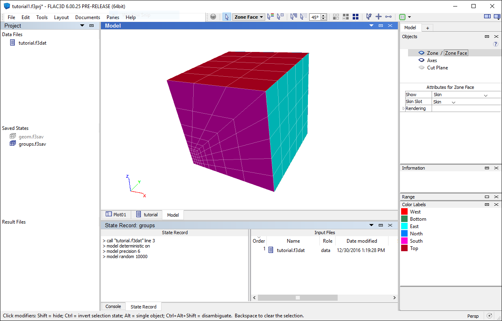
通过任何方式创建的网格单元，无论使用 zone create 命令，还是通过拉伸或构建块窗格，均显示在模型窗格中。
用户可在此区域使用鼠标选择工具，与模型元素交互；在当前阶段，这些元素为网格单元或网格单元面。可以选择模型中任何特别关注的区域，并将其定义为分组。
- 项目窗格的“保存状态”部分现在列出两个
.f3sav文件。当前活动模型状态是“groups.f3sav”（这里列出的非活动模型状态“geom.f3sav”以灰色显示）。 - 控制面板中的“对象”控件组指示视图中显示的对象。任何时候，模型网格单元都可显示为网格单元或网格单元面，但不能同时显示两者。因此，该项显示为“网格单元／网格单元面”，当前显示项周围有边框。单击“网格单元”或“网格单元面”字样，即可将其设为窗格显示项。即时视觉反馈是：显示网格单元时，面的轮廓为黑色；显示网格单元面时，轮廓为白色。
- 双击项目窗格“保存状态”中的“geom.f3sav”，观察结果。双击会恢复“geom”模型状态，并激活项目窗格。模型从视图中消失！现在单击模型窗格将其重新激活。可以看到当前要显示“网格单元面”，但在“网格单元面属性”区域中，“显示”属性设为“Skin”。保存
geom.f3sav时，“Skin”槽位没有任何内容，因此没有可显示内容。将“显示”改为“可见网格单元的表面”，模型就会重新可见。 - “geom.f3sav”为活动状态时，所有网格单元面以单一颜色显示，因为该模型状态没有面分组。双击“groups.f3sav”恢复该模型状态，再单击模型窗格将其激活。此时模型显示其开挖分组。查看“颜色标签”控件组，识别当前显示中的颜色分配。
- 可以试着展开“网格单元面属性”中的“渲染”项，观察更改各设置的效果。
模型窗格和视图窗格（绘图的窗格类型（pane type））中的显示遵循同一基本原则，检查模型：绘图（Examine Model: Plotting）主题后的界面中的表现（In the Interface）也作了说明。
- 视图中要显示的项目，列在控制面板的“对象”（模型窗格）或“绘图项列表”（视图窗格）控件组的上部。
- 在上部选中对象后，下部提供“属性”组，通过相应控件设置选定对象的显示方式。
指定模型、边界和初始条件
接下来添加一系列命令，完成初始模型定义。
将以下各行输入或复制粘贴到“tutorial”数据文件。
; 分配本构模型，设置初始条件和边界条件 zone cmodel assign mohr-coulomb zone property density 1000 bulk 1e8 ... shear 3e8 friction 35 ... cohesion 1e3 tension 1e3 zone face apply velocity-normal 0 range group "West" zone face apply velocity-normal 0 range group "Bottom" zone face apply velocity-normal 0 range group "North" model gravity (0,10,0) zone initialize-stresses ratio 0.5 zone face apply stress-normal 0 gradient (0,[-10*1000*0.5],0) ... range group "East" or "Top" ; 前一行使用内嵌 FISH，展示了 ; 如何推导所需数值 (-5000) ; 计算至平衡 model large-strain true
按求解按钮（
），将模型重新运行到此处。
上一步：创建模型分组（Create Model Groups） | 下一步：步进至平衡（Step to Equilibrium）
讨论：赋予本构模型
网格生成和模型分区（分组）完成后，必须为模型中的所有网格单元赋予一个或多个材料模型及相关性质。通过 指定网格单元本构模型（zone cmodel assign） 和 设置网格单元属性（zone property） 命令完成。这里，赋予 mohr-coulomb 模型的 指定网格单元本构模型（zone cmodel assign） 命令未提供 范围（range），因此将作用于模型中的所有网格单元。
通过 设置网格单元属性（zone property） 命令设置性质时，可跨越模型赋值。在不提供范围的情况下设置体积模量性质，会对所有本构模型使用 bulk 性质的网格单元设置该值（大多数模型都使用）。若要只为赋予特定本构模型的网格单元指定性质，可在范围中以本构模型赋值作为筛选准则。例如，zone property bulk 1e4 range model mohr-coulomb（与上文比较）将仅设置赋予 mohr-coulomb 模型的网格单元的 bulk 性质。
最后，注意这里引入了行内 FISH。gradient 向量的第二项用括号（[ ]）中的数学表达式给出。方括号调用 FISH 语言，由其执行计算并返回结果。
关于赋予本构模型的进一步讨论，见进一步讨论：赋予本构模型（Further Discussion: Assigning a Constitutive Model）。
讨论：施加边界条件
三条 施加网格单元面条件（zone face apply） 命令用于在模型“West”“North”和“Bottom”各侧的对称面上设置滚动边界条件（上一步（the preceding step）命名的分组在此派上用场）。
关于施加边界条件的进一步讨论，见进一步讨论：施加边界条件（Further Discussion: Applying Boundary Conditions）。
讨论：指定初始条件
本问题的初始应力状态受到重力荷载作用，通过 设置重力命令（model gravity） 命令添加。
默认情况下，FLAC3D 边界无应力且无约束。本问题使用单条 zone initialize-stresses 命令初始化所有应力（\(\sigma_{xx}\)、\(\sigma_{yy}\) 和 \(\sigma_{zz}\)）；也可以分别为每个分量提供应力（参见 单元初始化应力 xx 分量（zone initialize stress xx））。
最后，使用 施加网格单元面条件（zone face apply） 命令对远场施加应力边界，并通过 gradient 关键字使其与重力引起的变化匹配。
关于指定初始条件的进一步讨论，见进一步讨论：指定初始条件（Further Discussion: Specifying Initial Conditions）。
附加信息
有关这里所执行步骤的附加讨论，见界面中的表现（In the Interface）。结合本示例问题，赋予本构模型（assigning constitutive models）、施加边界条件（applying boundary conditions）和指定初始条件（specifying initial conditions）在各自主题中还有进一步说明。
进一步讨论：赋予本构模型
赋予本构模型
FLAC3D 内置十九种力学材料模型。（见“本构模型”第 1.2 节）新用户进行的大多数分析只需三种模型：null、elastic 和 mohr-coulomb。
null 模型表示从模型移除或开挖的材料。elastic 模型赋予各向同性弹性材料行为。mohr-coulomb 模型赋予 Mohr-Coulomb 塑性行为。
elastic 和 mohr-coulomb 模型要求通过 设置网格单元属性（zone property） 命令赋予材料性质。弹性模型所需性质为体积模量和剪切模量，或杨氏模量和泊松比。
注意：体积模量 \(K\)、剪切模量 \(G\) 与杨氏模量 \(E\)、泊松比 \(ν\) 通过以下方程关联：
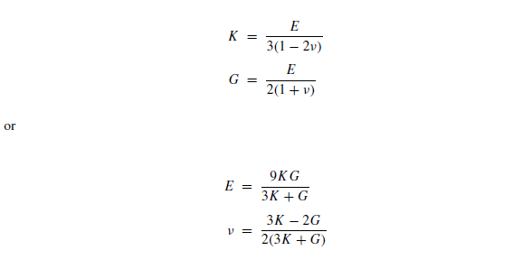
Mohr-Coulomb 塑性模型需要以下性质：
- 体积模量和剪切模量，或杨氏模量和泊松比；
- 摩擦角和剪胀角；
- 黏聚力；以及
- 抗拉强度。
如果未赋予其中某项性质，其默认值为零。
可为网格单元赋予不同材料模型。例如，对 10 m × 10 m × 10 m 网格的上半部分规定弹性模型，下半部分规定 Mohr-Coulomb 模型。下例[5]说明如何使用基于 \(z\) 坐标的 范围（range） 实现。
model new
zone create brick size 10,10,10
; 网格上半部分使用弹性模型
zone cmodel assign elastic range position-z=5,10
zone property bulk 1.5e8 ...
shear 0.3e8 ...
range position-z=5,10
; 下半部分使用摩尔–库仑模型
zone cmodel assign mohr-coulomb range position-z=0,5
zone property bulk 1.5e8 ...
shear 0.6e8 ...
friction 30 ...
cohesion 5e6 ...
tension 8.66e6 ...
range position-z=0,5
进一步讨论：施加边界条件
边界条件通常通过 zone apply 或 施加网格单元面条件（zone face apply） 命令指定；通过对应的 移除网格单元条件（zone apply-remove） 和 zone face apply-remove 命令移除。
数值模型中的边界条件，是在数值网格边界规定的场变量值。请注意，使用边界条件命令，会在 FLAC3D 求解期间施加一个条件或约束，除非用户明确修改，否则不会改变。边界可以是真实或人工的：真实边界存在于所模拟物体中；人工边界用于减小模型尺寸。
人工边界分为两类：对称面和截断面。对称面利用系统几何形状和荷载关于一个或多个平面对称的特点。截断面是距关注区域足够远、不会明显影响该区域行为的边界。必须了解这些边界应放置多远，以及可能对关注区域计算应力和位移引入什么误差。
本教程为问题确定两个对称面：一个为 \(x\)\(y\) 平面，另一个为穿过沟槽中心的 \(y\)\(z\) 平面。创建这部分模型的命令如下所示。[6]
model new
; 创建网格单元
zone create radial-brick ...
point 0 (0,0,0) point 1 (10,0,0) point 2 (0,10,0) point 3 (0,0,10) ...
size 3,5,5,7 ...
ratio 1,1,1,1.5 ...
dim 1 4 2 fill group 'exc'
zone face skin
; 本构模型和参数
zone cmodel assign mohr-coulomb
zone property bulk 1e8 shear 3e8 friction 35 ...
cohesion 1e3 tension 1e3 density 1000
; 边界条件
zone face apply velocity-normal 0 range group 'West'
zone face apply velocity-normal 0 range group 'Bottom'
zone face apply velocity-normal 0 range group 'North'
zone face apply stress-normal 0 gradient (0,-5000,0) range group 'East'
zone face apply stress-normal 0 gradient (0,-5000,0) range group 'Top'
model gravity (0,10,0)
zone initialize-stresses ratio 0.5
由此得到下图四分之一对称模型（可与进一步讨论：使用基本体划分网格（Further Discussion: Meshing With Primitives）主题中图示（the figure）的完整几何体比较）。

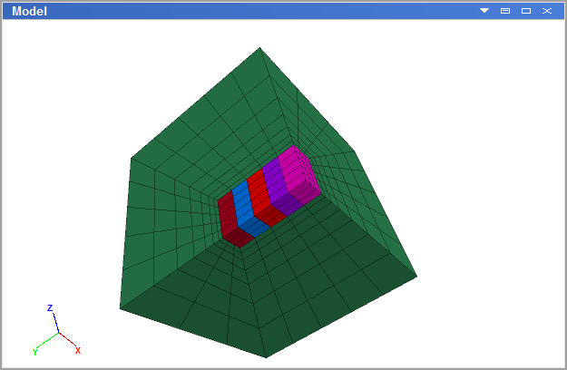
图 5：沟槽开挖的四分之一对称模型。
默认情况下，FLAC3D 边界无应力且无约束。通过 zone apply 或 施加网格单元面条件（zone face apply） 命令，可向任意边界或边界的一部分施加力或应力。可分别指定应力张量各分量。例如，以下命令可对 \(x\) = 10 处的边界施加 10 MPa 的恒定压缩 \(x\)\(x\) 应力分量
zone face apply stress-xx -10e6 range position-x 10
请记住，压应力为负（compressive stresses are negative）。命令行末尾使用 范围（range） 关键字，指定此处 施加网格单元面条件（zone face apply） 命令的作用范围。本例中，边界条件作用于 \(x\) = 10 默认容差（1e-7）以内的所有边界面。通过 gradient 关键字可施加线性变化的 \(y\)\(y\) 应力分量。例如，
zone face apply stress-yy -20e6 gradient (0,0,20e5) ...
range position-y 0 position-z 0 10
该命令对 \(y\) = 0 处的边界面施加 \(yy\) 应力分量。\(y\)\(y\) 应力随 \(z\) 线性变化，从 \(z\) = 10 处的 \(σ_{yy}\) = 0，变至 \(z\) = 0 处的 \(σ_{yy}\) = −20 × 106。
当使用 gradient 时，数值按以下关系变化
其中，\(S\)(^o) 为全局坐标原点（\(x\) = 0、\(y\) = 0、\(z\) = 0）处的值，即紧随 stress-syy 关键字后的值；\(gx\)、\(gy\) 和 \(gz\) 指定该值沿 \(x\)、\(y\) 和 \(z\) 方向的变化，是 gradient 关键字后的三个数值。
注意
*静力求解模式下，速度单位为每循环或每步的位移；动力模式下为单位时间的位移。
FLAC3D 中不能直接控制位移，事实上位移不参与计算过程。要对边界施加给定位移，必须规定边界在给定步数内的速度。若期望位移为 \(D\)，可施加速度 \(V\) 并运行 \(N\) 步（其中 \(N\) = \(D/V\)）。*实际应用中，应使 \(V\) 较小而 \(N\) 较大，以尽量减小对所模拟系统的冲击。可用 施加网格单元面条件（zone face apply） 命令指定速度，也可以指定梯度。
除 gradient 外，还可使用 add、multiply 和 vary 关键字，修改（to modify the values） zone apply 和 施加网格单元面条件（zone face apply） 等命令的数值。
以下命令说明如何沿 \(x\) = 0 处的边界，将 \(x\) 位移固定为零：
zone face apply velocity-x 0 range position-x 0
这实际上创建滚动边界：边界平面沿 \(x\) 方向固定，但可沿 \(y\) 和 \(z\) 方向自由运动。
可用以下命令指定铰支边界条件，即约束 \(x\)、\(y\) 和 \(z\) 方向
zone face apply velocity (0,0,0) range position-x 0
对于真实边界，选择应力还是位移边界条件通常明确。但对于截断面等人工边界，两类均可选择。经验表明，一般而言：
- 固定边界使应力和位移均被低估；
- 应力边界使应力和位移均被高估；以及
- 两类边界条件将真实解夹在中间，因此可以分别采用两种边界试算，并通过两次结果取平均，合理估计真实解。
进一步讨论：指定初始条件
与边界条件命令不同，初始条件命令为选定变量赋予初值，这些值可随计算进行而改变。例如，地质材料在任何开挖或施工开始前，地层中都有原位应力状态。通过设置 FLAC3D 网格初始条件，尝试重现该状态，因为它会影响模型后续行为。（这一影响在边界条件（Boundary Conditions）主题中有更详细的讨论。）
使用 zone initialize 命令规定初始应力状态。例如，
zone initialize stress xx -50e6 yy -40e6 zz -10e6
这会将以下初始压应力分量
\(\sigma_{xx}\) = −50e6\(\sigma_{yy}\) = −40e6\(\sigma_{zz}\) = −10e6
赋予模型中所有网格单元。可以初始化全部六个应力分量，既可单独指定，也可在一条命令中一起指定；还可以按前文进一步讨论：施加边界条件（Further Discussion: Applying Boundary Conditions）所述相同方式，指定边界应力梯度（用法另见数值修饰项（add、multiply、gradient 和 vary 关键字）（Value Modifiers (add, multiply, gradient, & vary keywords)））。
如果初始应力状态受到重力荷载作用，可通过 设置重力命令（model gravity） 命令添加。例如，
model gravity (0,-9.81,0)
其中沿 \(y\) 负方向施加 9.81 m/sec2 的重力加速度向量。如果指定重力荷载，还必须通过 初始化单元密度命令（zone initialize density） 命令初始化材料质量密度。
本教程示例中，\(σ_{xx}\) 和 \(σ_{zz}\) 应力及其梯度等于 \(σ_{yy}\) 应力及其梯度的一半。应力可初始化为任意值，但必须检查应力状态，确保不违反屈服准则（本例为 Mohr-Coulomb）。下一节进一步讨论初始平衡状态。
步进至平衡
接下来添加一系列命令，完成初始模型定义。
将以下各行输入或复制粘贴到“tutorial”数据文件。
model solve model save "tr_eq" ; 监测沟槽开挖 zone gridpoint initialize displacement (0,0,0)
按求解按钮（
），将模型重新运行到此处。将“Plot01”设为活动选项卡。
按控制面板中的构建绘图按钮（
 ），双击“历史图”。
），双击“历史图”。在“属性”控件组中，按“mechanical ratio limit”标签旁的加号按钮（
 ）。
）。在历史项属性中，展开“Y 轴”组（按标签旁的箭头），勾选“对数”框，将绘图的 \(y\) 轴设为对数坐标。
上一步：指定模型、边界和初始条件（Specifying Models, Boundaries, and Initial Conditions） | 下一步：修改模型：开挖（Alter Model: Excavation）
讨论：步进至平衡
修改 FLAC3D 模型之前，必须使其处于初始力平衡状态。对于简单几何模型，可以赋予边界条件和初始条件，使模型初始时就精确平衡。但大多数情况下，尤其是几何复杂或含多种材料的问题，需要在给定边界和初始条件下，将模型步进至初始平衡。可通过 执行计算时步命令（model step）（或其同义命令 执行计算时步（model cycle））或 求解模型（model solve） 命令实现。
本例在发出 求解模型（model solve） 命令前，将程序设为大应变计算，使网格单元位置随位移发展而移动。此外，设置在模型循环时记录平均收敛比历史，用于显示并验证模型达到平衡。
发出 求解模型（model solve） 命令后，模型将循环 1805 步。完成时，又到一个适合保存模型状态的时点；上述清单的最后一条命令完成此操作。
为验证模型已达到平衡，创建收敛比曲线（通过上述步骤（3）至（6））。生成图像应与下图一致。曲线表明，1805 步后比值达到 1e-5。

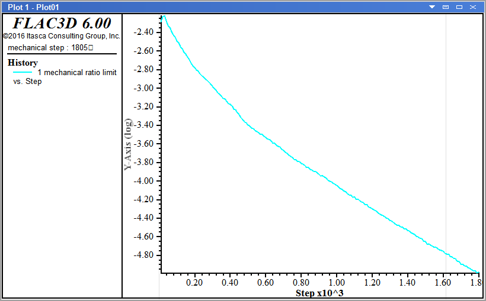
附加信息
关于循环至平衡的进一步入门讨论，见进一步讨论：步进至平衡（Further Discussion: Step to Equilibrium）主题。
关于程序对这里发出命令的响应，见界面中的表现（In the Interface）主题。
进一步讨论：步进至平衡
每个网格点的节点净力向量均为零时，模型处于完全平衡（见理论背景（Theoretical Background）及其后续内容）。FLAC3D 监测所用收敛准则，并在 求解模型（model solve） 命令执行时输出到屏幕，用户由此可评估何时达到平衡。
数值分析中，平均力比永远不会精确达到零。不过，当它达到较小值时，即可认为模型处于平衡。默认限值 1e-5 被认为足以满足多数情况。
这是用 FLAC3D 进行数值问题求解的一个重要方面。用户必须判断模型何时达到平衡。
FLAC3D 内置多种功能辅助这一判断。可以通过以下命令添加历史，记录最大不平衡力历史
zone create brick
此外，还可记录所选变量的历史，例如某个网格点的速度或位移。以下命令为例：
model history mechanical ratio
zone history velocity-x position (3,4,4)
第一条历史命令记录位置（\(x\) = 3、\(y\) = 4、\(z\) = 4）处的 \(x\) 速度，第二条记录位置（\(x\) = 0、\(y\) = 0、\(z\) = 8）处的 \(z\) 位移。
运行数百或数千个计算步后，可绘制这些记录的历史，以指示平衡状态。下例说明该过程。[7]
model new
model large-strain off
; 创建网格单元
zone create brick size 6 8 8
zone face skin
; 分配本构模型和属性
zone cmodel assign elastic
zone property bulk 1e8 shear 0.3e8
; 边界条件
zone face apply velocity-normal 0 range group 'East' or 'West'
zone face apply velocity-normal 0 range group 'North' or 'South'
zone face apply velocity-normal 0 range group 'Bottom'
zone face apply stress-normal -1e6 range group 'Top'
; 历史
model history mechanical ratio
zone history velocity-x position (3,4,4)
zone history displacement-z position (0,0,8)
; 计算步
model step 1500
;model solve
初始平均力比最大不平衡力约为 0.19。1500 步后，该力降至约 .00002。绘制第一条历史可见，平均力比正在趋近零。可创建绘图窗口，添加“历史”绘图，并在属性面板中选择 mechanical ratio limit 历史来实现。
以下句子不完整。在控制台窗格的命令提示符（command prompt）中。结果应如下所示。
下图明显大于其他图。

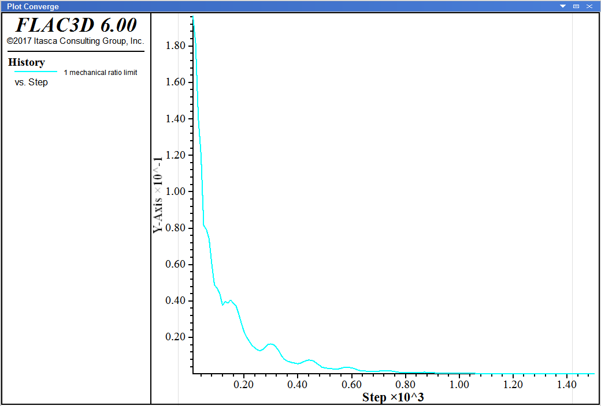
图 6：最大不平衡力历史。
速度也趋近零，位移时程变为常数；这些都表明已达到平衡状态。

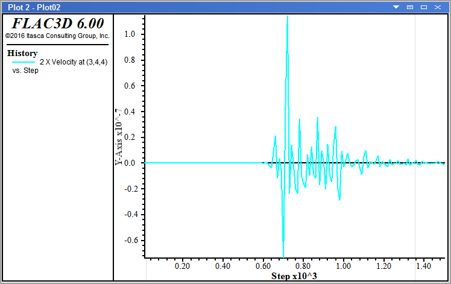
图 7：(x = 3, y = 4, z = 4) 处的 x 速度时程。

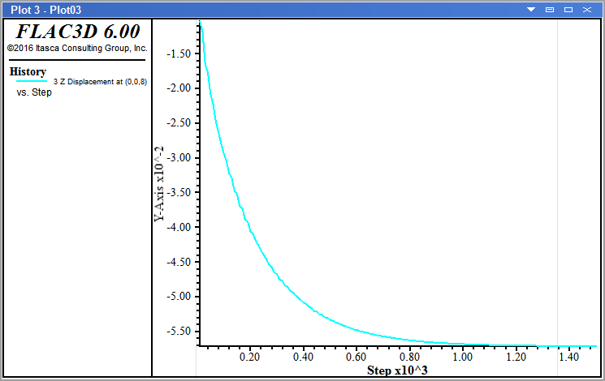
图 8：(x = 0, y = 0, z = 8) 处的 z 位移时程。
如果用户希望在最大不平衡力低于指定限值时，让 FLAC3D 自动停止，可用 求解模型（model solve） 命令替代 执行计算时步命令（model step）。取消命令 ;model solve 的注释（删除“;”），并将 model step 1500 注释掉（在前面添加“;”），重新运行前述问题。这次 FLAC3D 应在第 1657 步停止计算。绘图如果已按前述方法创建，会自动更新，尽管结果与上文基本相同。
默认情况下，如果 model solve 未指定其他限制，采用 1.0 × 10-5 的平均力比限值。可在发出命令前输入以下内容来改变该比值
zone face apply velocity (0,0,0) range position-z 0
然后再发出 求解模型（model solve） 命令。这里 1e-6 是用户给定值，用于设置当前收敛比限值。
上例中，可以在 求解模型（model solve） 命令前插入 单元初始化应力（zone initialize stress） 命令，无需步进即可达到初始平衡阶段：
model solve convergence 0.1
此时平均力比几乎为零。插入上面一行后，按 按钮重新运行问题。请注意，此时模型初始位移自动为零。回顾进一步讨论：施加边界条件（Further Discussion: Applying Boundary Conditions）主题中的示例（the example），其数据文件所描述模型应处于应力平衡状态。如果运行该数据文件，然后在命令提示符输入
zone initialize stress xx -1e6 yy -1e6 zz -1e6
在命令提示符（command prompt）输入后，会发现仍需少量循环才能达到 1 x 10-5 的限值。这是渐变网格造成的。如果所有网格单元尺寸相同，不平衡力会接近零。但对于渐变网格，通常需要若干计算步，才能使模型达到初始平衡状态。
分析中，在修改之前使模型处于平衡非常重要。应在整个模型中记录若干历史，确保不存在较大的力不平衡。达到平衡时，多进行一些计算步不会对分析产生不良影响，但步数过少则会影响分析。
步进过程中可随时按 <Shift+Esc> 中断 FLAC3D 计算。使用较大步数的 执行计算时步命令（model step） 命令，并定期中断步进、检查历史、恢复步进，直到达到平衡条件，可能很方便。

修改模型：开挖
现在对模型执行开挖。
将以下各行输入或复制粘贴到“tutorial”数据文件。
zone history displacement-z position (.01,.01,2) ; 开挖步骤 1 zone cmodel assign null range group "exc1" model step 1000 model save "exc1" ; 开挖步骤 2 zone cmodel assign null range group "exc2" model step 1000 model save "exc2" ; 开挖步骤 3 zone cmodel assign null range group "exc3" model step 1000 model save "exc3" ; 开挖步骤 4 zone cmodel assign null range group "exc4" model step 1000 model save "exc4" ; 开挖步骤 5 zone cmodel assign null range group "exc5" model step 1000 model save "exc5" ; 安装锚索支护 model restore "exc2"
按求解按钮（
），将模型重新运行到此处。激活“Plot01”选项卡。
上一步：步进至平衡（Step to Equilibrium） | 下一步：检查模型：绘图（Examine Model: Plotting）
讨论：执行修改
开挖前，设置两条附加历史：一条记录 (1,0,0) 网格点的 \(x\) 位移，另一条记录 (0,0,2) 网格点的 \(z\) 位移。
开挖首先为当前开挖阶段的网格单元赋予 null 模型。然后模型循环 1000 步，保存模型状态，再进入下一开挖阶段。请注意，执行开挖的 指定网格单元本构模型（zone cmodel assign） 命令使用了创建模型分组（Create Model Groups）中建立的开挖阶段网格单元分组。
查看“Plot01”可见，在前一步（the previous step）的历史中增加了五个开挖阶段（图中可看到一个加五个极小值点）。关键在于，模型在第三阶段发生破坏——下一开挖步开始前，收敛比未达到或接近 1e-5。
此处应注意，本例使用 执行计算时步命令（model step） 命令略显不真实，仅用于高效说明建模过程。但更严格的模型应采用 求解模型（model solve） 命令，这会使第三步破坏非常明显：模型将持续循环。可以将第三开挖阶段的 执行计算时步命令（model step） 1000 替换为 求解模型（model solve） 进行测试。模型最终会因“几何形状非法”错误停止循环，始终无法达到平衡。这是持续变形模型常见的终止方式，表示模型中某个网格单元已变形至无法继续计算的状态。

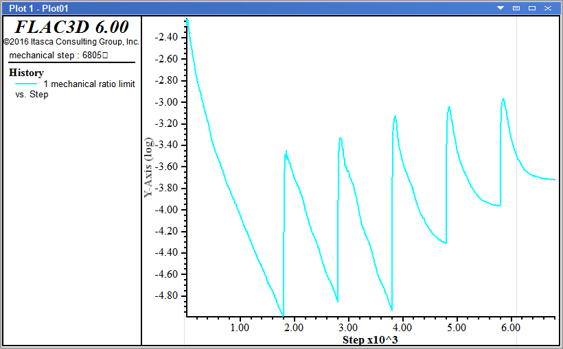
本教程下一建模阶段将在第二阶段后安装锚索作为支护，并观察效果。但在此之前，先探索绘图功能，进一步查看第三阶段发生的破坏。
附加信息
关于分阶段建模的进一步入门讨论，见进一步讨论：执行修改（Further Discussion: Performing Alterations）。
进一步讨论：执行修改
FLAC3D 允许在求解过程的任何时刻改变模型条件。这些变化可以采用以下形式：
- 开挖材料；
- 添加或删除网格点荷载或应力；
- 改变任意网格单元的材料模型或性质；以及
- 固定或释放任意网格点的速度。
注意
*如果改变已平衡模型中的体积模量或剪切模量，不会观察到即时影响，因为 FLAC3D 采用切线模量，而非割线模量。
本教程使用 单元本构模型指定空（zone cmodel assign null） 命令进行开挖。可在任何网格点使用 zone apply（force、force-x 等）命令施加荷载。模型边界应力可按前述方式通过 施加网格单元面条件（zone face apply） 命令改变。使用 指定网格单元本构模型（zone cmodel assign） 和 设置网格单元属性（zone property） 命令改变材料模型和性质*。使用 施加网格单元面条件（zone face apply） 命令将 velocity 设为所需值，以固定或释放网格点速度。显然，可以重复若干命令来执行各种模型修改。
如果模型网格单元包含塑性模型（例如 指定Mohr-Coulomb本构模型（zone cmodel assign mohr-coulomb）），某次修改可能使力平衡无法实现。换言之，模型部分或全部区域的不平衡力无法趋近零；此时平均力比将趋近非零常数，表明材料正在发生稳态流动，即部分或全部模型正在破坏。
本教程 :ref:-t1_09support- 主题后的 :ref:-t109_installingsupport- 提供了一个破坏清晰可辨的简单模型示例。CS：此处以后需要重新检查
检查模型：绘图
以下步骤说明绘图的基本操作。
- 选择，在随后对话框中命名为“xdisp”。请注意，新建空白绘图成为活动窗格。
- 按构建绘图按钮（），在随后对话框中选择历史图，按。
- 在控制面板的“属性”部分：
- 按标签旁的添加按钮（），添加历史 2“X 位移，位置…”；
- 展开“X 轴”，取消“最小值”和“最大值”的“自动”勾选，将最小值输入为“0”、最大值为“6000”；以及
- 展开“Y 轴”，取消“最小值”的“自动”勾选，输入最小值“-0.008”。
- 按标签旁的添加按钮（
- 重复步骤 1 至 2，创建名为“zdisp”的 \(z\) 位移时程图。
- 在“zdisp”绘图中，转到“属性”部分：
- 按标签旁的添加按钮（），添加历史 3“Z 位移，位置…”；
- 展开“X 轴”，取消“最小值”和“最大值”的“自动”勾选，将最小值输入为“0”、最大值为“6000”；以及
- 展开“Y 轴”，取消“最小值”的“自动”勾选，输入最小值“-0.0038”。
- 按标签旁的添加按钮（
- 按
Ctrl + Shift + N，将新绘图命名为“xdisp2”。 - 按构建绘图按钮（），在随后对话框中选择网格单元，按。
- 在“属性”控件组中：
- 在“着色依据”开关中选择“等值线”；
- 在“数值”开关中选择“位移”；
- 在“分量”开关中选择“Z”；
- 展开“等值线”项，勾选“反转”框；以及
- 取消“最小值”的“自动”勾选，并设为“-0.0003”。
- 现在激活这三个绘图中的任意一个，在项目窗格逐个双击保存状态，依次浏览模型。先从“tr_eq”状态（初始平衡）开始，再依次查看开挖阶段（“exc1”至“exc5”）。
上一步：修改模型：开挖（Alter Model: Excavation） | 下一步：进一步修改：支护（Further Alterations: Support）
讨论：观察破坏
为观察开挖顺序推进时的破坏，绘制运行模型之前、初始平衡建立后立即定义的历史项。默认情况下，历史图自动计算 \(x\) 和 \(y\) 轴坐标范围的最大最小值。查看单一模型状态的历史时，这很高效省时。但比较一系列模型状态时，由于任一轴的范围都可能随状态变化，前后视图难以比较。因此，为显示第三开挖阶段开始的破坏，这里通过关闭“自动”属性来固定绘图坐标范围。这样，依次浏览保存状态（上述步骤（9））时，可清楚观察破坏发展，而图表不会“来回跳动”。
绘图作为项目实体
与命令输入或模型状态不同，绘图不作为独立文件存储。创建后，它们随项目保存。关闭包含绘图的窗格（ ）会将其完全删除；要恢复就必须重建。可按需隐藏绘图（按其窗格中的 ）；隐藏绘图仍列在“文档”菜单中，并可从中重新打开。
）会将其完全删除；要恢复就必须重建。可按需隐藏绘图（按其窗格中的 ）；隐藏绘图仍列在“文档”菜单中，并可从中重新打开。
四个参考绘图都已命名。创建新绘图时，FLAC3D 自动建议编号名称（例如“Plot04”），但如这里所示，使用更有描述性的名称很有帮助，尤其在绘图很多时。

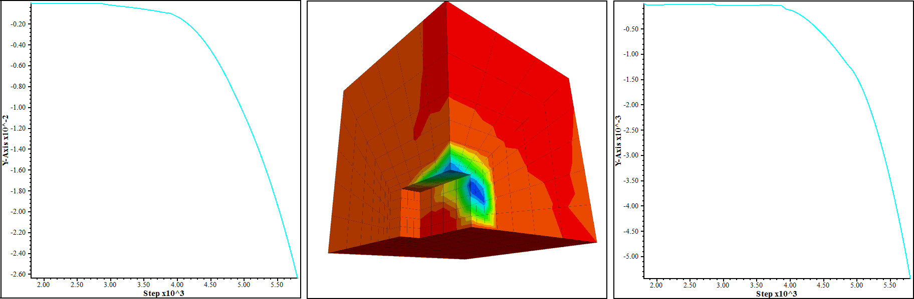
附加信息
关于绘图操作和 FLAC3D 一般约定的进一步讨论，见界面中的表现（In the Interface）。
界面中的表现
在模型窗格或视图窗格的绘图中，模型可视化的基本机制如下。
- 向视图放入对象。在模型窗格中，模型对象（网格单元、结构单元）创建时自动显示。在视图窗格中，则通过构建绘图工具（），从构建绘图对话框选取项目。
- 视图中当前显示的对象，列在控制面板上部。
- 要控制对象如何显示，请在上方列表中选中它。这会激活下方“属性”部分中该对象的可视化控件。
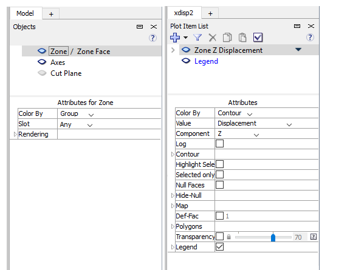
图 10：控制面板的两种视图：模型窗格中的“对象”控件组（左），以及视图窗格中的“绘图项列表”。
- 模型窗格中，网格单元和网格单元面列在“对象”控件组的同一行，一次只能显示一种。边框指示当前显示项。单击另一项的标签，会改为显示该项。
- 在视图窗格选择绘图项时，项目名右侧会出现菜单选择器图标（）。该菜单提供设置属性、添加绘图项，以及剪切、复制、删除或粘贴当前项等选项。
进一步修改：支护
在第二开挖阶段后安装支护，以稳定沟槽并防止第三阶段出现的破坏。
将以下各行输入或复制粘贴到“tutorial”数据文件。
; 安装锚索支护 model restore "exc2" structure cable create ... by-ray (1.0,0.4,1.5) (1,0,0) 4 segments 4 structure cable create ... by-ray (1.0,0.4,0.5) (1,0,0) 4 segments 4 structure cable create ... by-ray (1.0,1.2,1.5) (1,0,0) 4 segments 4 structure cable create ... by-ray (1.0,1.2,0.5) (1,0,0) 4 segments 4 structure cable property young 2e9 ... yield-tension 1e8 ... cross-sectional-area 1.0 ... grout-cohesion 1e10 ... grout-stiffness 2e9 ... grout-perimeter 1.0 zone cmodel assign null range group "exc3" model step 1000 model save "cab3" structure cable create ... by-ray (1.0,2.0,1.5) (1,0,0) 4 segments 4 structure cable create ... by-ray (1.0,2.0,0.5) (1,0,0) 4 segments 4 structure cable property young 2e9 ... yield-tension 1e8 ... cross-sectional-area 1.0 ... grout-cohesion 1e10 ... grout-stiffness 2e9 ... grout-perimeter 1.0 zone cmodel assign null range group "exc4" model step 1000 model save "cab4" structure cable create ... by-ray (1.0,2.8,1.5) (1,0,0) 4 segments 4 structure cable create ... by-ray (1.0,2.8,0.5) (1,0,0) 4 segments 4 structure cable property young 2e9 ... yield-tension 1e8 ... cross-sectional-area 1.0 ... grout-cohesion 1e10 ... grout-stiffness 2e9 ... grout-perimeter 1.0 zone cmodel assign null range group "exc5" model step 1000 model save "cab5"
按求解按钮（
），将模型重新运行到此处。
上一步：检查模型：绘图（Examine Model: Plotting） | 下一步：项目收尾（Project Finishing）
讨论：安装锚索
使用 恢复模型（model restore） 命令，将模型恢复到两次开挖后仍然稳定的状态。现在，每个开挖阶段除将网格单元设为空外，还要增加支护。先在空间上定义锚索，再定义其性质。随后与前面一样，将该开挖阶段网格单元设为空，循环 1000 步并保存模型状态。重复这一顺序，生成新的第三、四、五开挖阶段。
附加信息
进一步讨论：使用保存／恢复与分阶段建模
至此，保存模型（model save） 和 恢复模型（model restore） 命令在分阶段分析中的作用应已明确。在一个建模阶段结束时（如初始平衡），可以且应当使用 model save 保存模型状态。以后可通过 model restore 恢复该文件，使模型回到保存时的状态。因此，每次修改都不必从头构建模型；只需在修改前保存模型，每次分析新变化时恢复到该时点。
例如，本教程沟槽问题中，每次开挖深度为 2 m。从初始平衡阶段（“tr eq”）开始，在每个阶段结束时保存模型状态。依次查看各阶段，就能确定沟槽在哪个阶段破坏，并研究支护（如拉锚或土钉）对沟槽稳定性的影响。为作比较，下文考察一次性开挖整个沟槽的模型。
运行模型确定沟槽在第三开挖阶段破坏后，只需重新启动第二阶段保存文件（exc2.f3sav），安装锚索，再继续开挖。这次沟槽壁保持稳定。
如此使用保存文件，可以从所需的任何阶段开始，进行一系列不同计算，研究锚索单元间距、性质等各种问题条件。
更简单的示例
为说明将建模过程划分为阶段的价值，可简化本教程问题。如果将模型设为一次性开挖整个沟槽，数据文件可能如下。
model new
; 创建网格单元
zone create radial-brick ...
point 0 (0,0,0) point 1 (10,0,0) ...
point 2 (0,10,0) point 3 (0,0,10) ...
size 3,5,5,7 ...
ratio 1,1,1,1.5 ...
dim 1 4 2 fill group 'exc'
zone face skin
; 分配本构模型和属性
zone cmodel assign mohr-coulomb
zone property bulk 1e8 shear 3e8 friction 35 cohesion 1e3 ...
tension 1e3 density 1000
; 边界条件
zone face apply velocity-normal 0 range group 'West'
zone face apply velocity-normal 0 range group 'North'
zone face apply velocity-normal 0 range group 'Bottom'
zone face apply stress-normal 0 gradient (0,-5000,0) ...
range group 'East' or 'Top'
; 初始条件
model gravity (0,10,0)
zone initialize-stresses ratio 0.5
; 历史
zone history displacement-x position 1,0,0
; 开挖与设置
model large-strain on
zone relax excavate range group 'exc'
; ……然后计算响应：
model step 1000
位移等值线表明沟槽破坏。

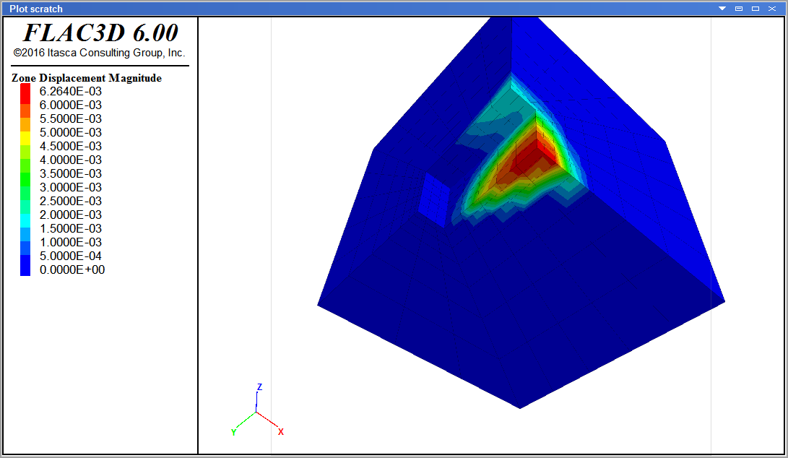
绘制沟槽壁位移时程也可指示破坏。
持续增加的位移表明破坏。

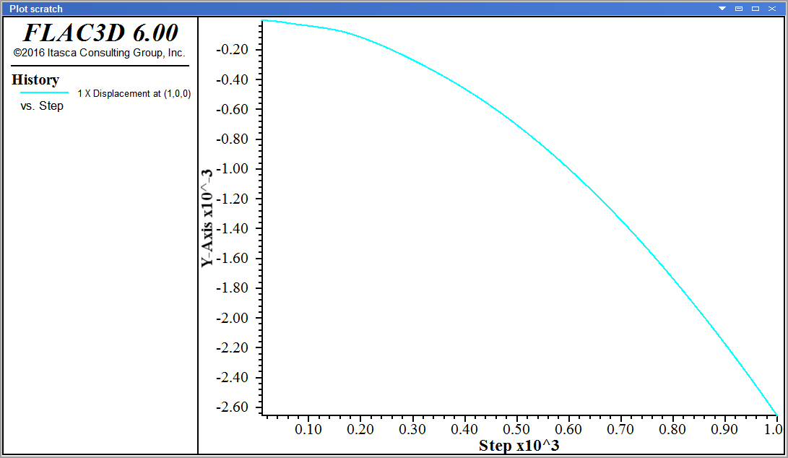
可以看出，这可能是教程问题早期的“草稿”。以此为起点，既然已观察到破坏，自然的下一步便是像教程模型那样，把开挖拆分为顺序阶段，查看模型行为。更精确地定位模型破坏时点，进而可指示应在哪个阶段为开挖引入支护。
项目收尾
至此项目已完成。为便于妥善管理，建议再做几步。
- 使用保存当前项目。
- 选择菜单命令，将项目打包。
- 在随后对话框中，检查要打包的内容，按，并提供打包文件名称。
上一步：进一步修改：支护（Further Alterations: Support）
讨论：项目完成
模型计算完成后，保存项目，并为稳妥起见创建项目打包文件。
至此，一般求解流程图解（General Solution Procedure, Illustrated）主题所示建模过程，以及如何在 |flac3d| 程序中实现该过程（见 :ref:-solutionasflac3dproject- 主题；CS：参见此前关于该已移除项目的标记），应当更加清楚。本教程表明，模型设置和初始定义通常沿单一路径进行；但经过平衡阶段后，由于探索、修订和修改，可能出现的分支几乎没有限制。在这种情况下，设计良好且阶段明确的项目极其重要。
关于打包文件
打包文件是收集以下内容的压缩归档文件：
- 模型输入的所有文件，即项目窗格“数据文件”部分列出的文件；
- 状态记录文件，即项目窗格“保存状态”部分列出的每个保存文件所对应的记录文件；以及
- 项目文件
使用打包文件，可将重建项目所需所有材料存储在同一位置。由于打包文件不存储保存文件，而大型模型的保存文件可能非常大，因此它是实用高效的项目归档方式。但效率的代价是，使用打包文件重建项目时，需要重新运行各数据文件，或回放状态记录文件，以重新生成项目保存状态。
打包文件也是在技术支持请求中附带项目的好方法。通过技术支持对话框（）请求支持时，可以自动执行此操作。
附加信息
界面中的表现：收尾

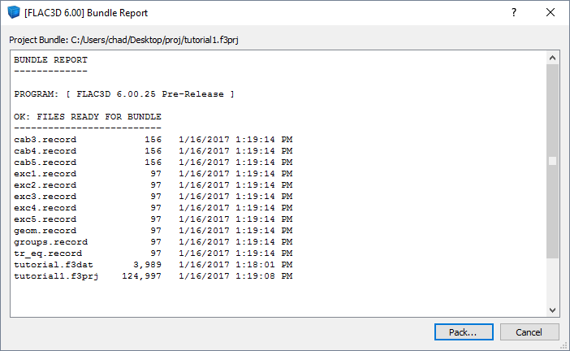
- 打包文件报告会“预览”将包含在包中的内容。
- 项目中的每个
.f3sav文件都应有一个对应的.record文件。 - 项目文件及所有输入文件（数据文件等）均包含在包中。
- 文件报告将包内容分为不同部分：“正常”“警告：文件已修改但未保存”“错误：无法定位文件（链接损坏）”等。本教程相对简单，所有内容均为“正常”。参考信息见打包报告（Bundle Report）主题。
尾注
| [1] | 本教程创建的文件随程序提供，因此用户也可直接加载文件，跟随教程操作，而无需自行构建文件。文件可在程序示例中找到（从菜单选择，在随后对话框中选择 ）。 |
| [2] | 可使用 设置程序自定义工作目录命令（program directory custom） 命令，覆盖将项目文件夹用作当前工作目录的设置。也可在命令提示符中提供明确路径，将文件保存到项目文件夹以外的位置。 |
| [3] | 如果希望运行本页示例，可采用两种方式。
所有示例均以 新建模型（ |
| [4] | 忽略现有名称复选框用于确保创建的分组命名时不参考已有分组。如果未勾选，新分组名将由已有分组名与 zone face skin 命令处理期间自动生成的名称拼接而成。 |
| [5] | 如果希望运行上述示例：
|
| [6] | 如果希望运行上述示例：
|
| [7] | 如果希望运行上述示例：
|
| 这些内容对您有帮助吗？… | FLAC3D © 2019, Itasca | 原文更新于 2020 年 10 月 8 日 |
| 版权与免责声明 | ||